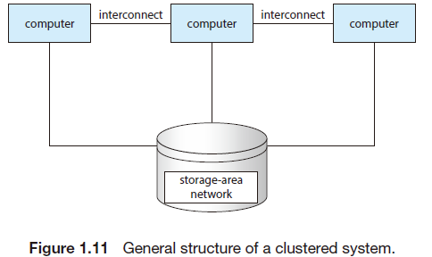
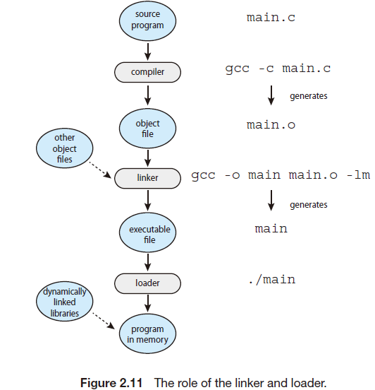

Operating System Concepts
[TOC]
Chapter 1 Introduction(介绍)
1.1 What OS Do?
A computer system can be divided roughly into four components: the hardware, the operating system, the application programs,and a user
1.1.1 User View
Some Computer have little or no user view,such as embedded computers(嵌入式计算机)
1.1.2 System View
we can view OS as a resource allocator
1.1.3 Defining OS
middleware:a set of software frameworks that provide additional services to application developers
In summary OS include:
Kernal(内核):alway running
Middleware(中间件):ease application development and provide features
system programs(系统程序):aid in managing the system while it is running
1.2 Computer-System Organization
1.2.1 Interrupts(中断)
Start a I/O operation:
(1)device driver loads the appropriate registers in the device controller.
(2)device controller examines the contents of these registers to determine what action to take
1.2.1.1 Overview
interrupt vector is the memory location of an interrupt handler
1.2.1.2 Implementation
the device controller raises an interrupt by asserting a signal on the
interrupt request line, the CPU catches the interrupt and dispatches it to the
interrupt handler, and the handler clears the interrupt by servicing the device
Most CPUs have two interrupt request lines. One is the nonmaskable interrupt(不可屏蔽中断)
,another is maskable interrupt(可屏蔽中断)
1.2.2 Storage Structure
bootstrap(引导程序)
1.2.3 I/O Structure
DMA(Direct Memory Access):After setting up buffers, pointers, and counters for the I/O device, the device controller transfers an entire block of data directly to or from the device and main memory, with no intervention by the CPU. Only one interrupt is generated per block, to tell the device driver that the operation has completed, rather than the one interrupt per byte generated for low-speed devices. (为I/O设备设置好缓冲区，指针，和计时器后。设备控制器就传输完整的数据块在主存和设备之间，不需要CPU干预。整个过程只有一次中断-通知操作完成)
1.3 Computer-System Architecture
1.3.1 Single-Processor System(单道程序系统)
All of these special-purpose processors run a limited instruction set and do not run processes.
只有一个程序,顺序执行,独占资源,结果可再现性
1.3.2 MultiProcessor System(多道程序系统)
symmetric multiprocessing(对称多处理):
SMP (symmetric multiprocessing) is the processing of programs by multiple processors that share a common operating system and memory.
多核处理器的结构和缓存
non-uniform memory access(NUMA,非均匀存储器存储): is a computer memory design used in multiprocessing, where the memory access time depends on the memory location relative to the processor
1.3.3 Clustered Systems(集群系统)
Clustering is usually used to provide high-availability service

1.4 Operating-System Operations
计算器启动:
第一阶段
1.最先读取BIOS（里面包含自检程序,CMOS设置程序,系统自动装载程序、主要I/O驱动和中断服务）
2.自检
3.控制权转交到引导设备
第二阶段
1.读取主引导记录(512B)
2.运行启动管理器
3,转交启动管理器
1.4.1 Multiprogramming and Multitasking
1.4.2 Dual-Mode and Multimode Operation
存在两种模式
user mode and kernel mode(also called supervisor mode, system mode, or privileged mode)
在hardware里加个模式位
系统启动时处于kernel mode
转换到user mode 的命令本身就是privileged instruction
When a system call is executed, it is typically treated by the hardware as a software interrupt. Control passes through the interrupt vector to a service routine in the operating system, and the mode bit is set to kernel mode
(系统调用被看作软中断，然后会变成kernel mode)
1.4.3 Timer
防止死循环，维持对系统的控制
1.5 Resource Management(资源管理)
1.5.1 Process Management(进程管理)
1.5.2 Process Management(内存管理)
1.5.3 File-System Management(文件系统管理)
1.5.4 Mass-Storage Management(大容量存储器管理)
1.5.5 Cache Management(缓存管理)
1.5.6 I/O System Management(I/O系统管理)
1.6 Security and Protection(安全与保护)
1.7 Virtualization(虚拟化)
1.8 Distributed Systems(分布式系统)
1.9 Distributed Systems(核心数据结构)
略
Bitmaps：实际上是一个字符串。不过可以对字符串的位进行操作
1.10 Computing Environments
传统计算、移动计算、C\S计算、
P2P计算
云计算
Chapter 2:Operating System Structures
2.1 Operating-System Services(OS服务)

2.2 User and Operating-System Interface
也就
命令解释器
GUI
触屏
2.3 System Calls(系统调用)
System calls provide an interface to the services made available by an operating system.
2.3.2 API
好处:提高可移植性,可以在任何支持同样API的系统上运行
2.3.3 Types of System Calls
process control,file management, device management, information maintenance, communications,and protection
(进程控制，文件管理，设备管理，信息维护，交流，保护)
2.4 System Services(系统程序)
System services, also known as system utilities,
File management.
Status information
File modificatio(文件修改)
Programming-language support.(编程语言支持)
Program loading and execution.
Communications.
Background services.
2.5 Linker and Loader

Linker链接文件后，统一了代码逻辑地址
2.8 Operating-System Structure

2.8.1 Monolithic Structure(整体架构)
2.8.2 Layered Approach
2.8.3 Microkernels(微内核)
内核只有基本功能。
2.9 Building and Booting an Operating System(启动)
2.9.2 System Boot
- A small piece of code known as the bootstrap program(In BIOS) or boot loader
locates the kernel.(This initial boot loader usually does nothing more than load
a second boot loader, which is located at a fixed disk location called the boot block.) - The kernel is loaded into memory and started.
- The kernel initializes hardware.
- The root file system is mounted.
UEFI
Chapter 3 Process
3.1 Process Concept
3.1.1 The Process

Text section:the executable code
Data section:global variables
Heap section:动态分配的内存(memory that is dynamically allocated during program run
time)
Stack section:临时数据存储。
3.1.2 Process State
k核,n进程时
等待状态:最多n个(全部死锁),最少0个
运行状态:最多k个(全核运行),最少0个(死锁)
就绪状态:最多n-k个(全核运行，没有等待的进行),最少0个(一部分运行，一部分等待)
3.1.3 Process Control Block（PCB）
有进程状态，进程变化(pid),程序计数器，寄存器，内存界限，打开文件列表等
3.2 Process Scheduling
3.2.1 Scheduling Queues
3.2.2 CPU Scheduling
3.2.3 Context Switch
3.3 Operations on Processes
3.3.1 Process Creation

pid＝fork()
执行这一句时，PC在下一句
fork()内会用一段嵌入式汇编进行系统调用
copy_process将父进程的内容复制给子进程，但是子进程tss中的eax值赋值为0（这也是为什么子进程中返回0的原因）
当赋值完成 后，copy_process会返回新进程（该子进程）的pid，这个值会被保存到eax中。这时子进程就产生了，此时子进程与父进程拥有相同的代码空 间，程序指针寄存器eip指向相同的下一条指令地址